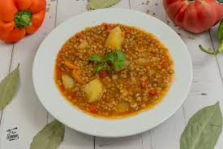

Receta de Lentejas

Descripción:
Plato de lentejas tradicional, compatible con la cocina tradicional.
Ingredientes
- Un Kilo de lentejas
- Dos zanahorias
- Una cebolla
- Una patata
- Un chorizo fresco
- Sal
- Perejil
- Aceite
- 500g de costilla fresca de cerdo
Pasos:
- En primer lugar, se realizará un sofrito con la cebolla, zanahoria, la costilla fresca dorada y una
pizca de perejil y sal.
- El sofrito se cubrirá con agua y se le añadirán la patata y el chorizo fresco.
- Tras 20 minutos de coción, se le añadirá un poco más de agua y las lentejas.
- Se dejará la olla a fuego lento durante media hora.
Ir a Inicio